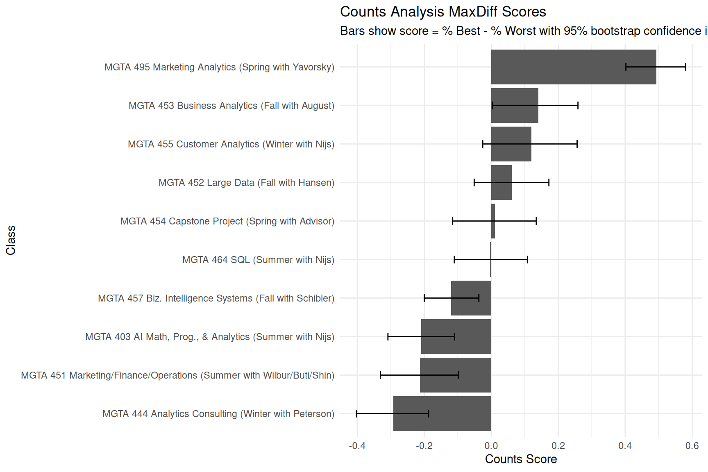
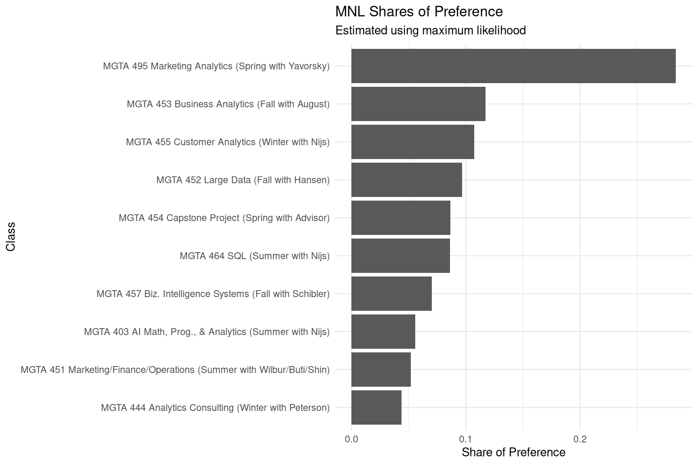
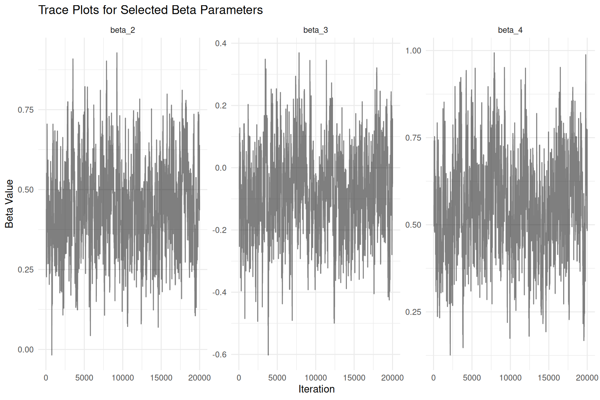
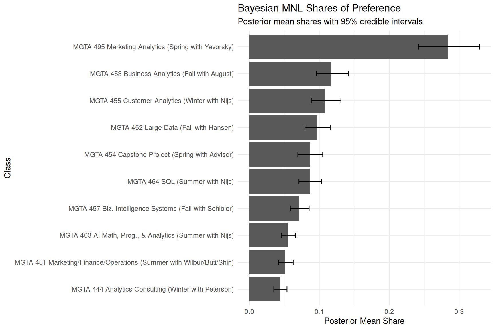
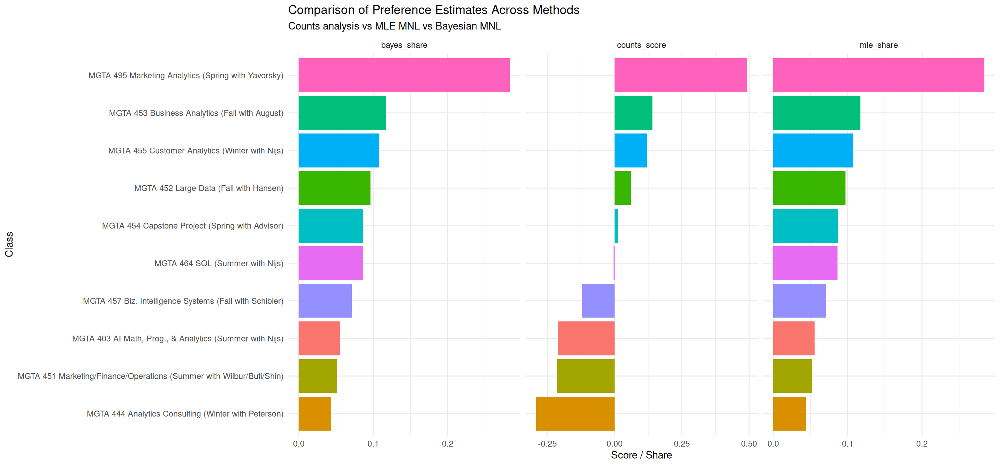

| Rank | Item | Class | Times Shown | Times Best | Times Worst | % Best | % Worst | Score |
|---|---|---|---|---|---|---|---|---|
| 1 | 9 | MGTA 495 Marketing Analytics (Spring with Yavorsky) | 274 | 147 | 12 | 0.536 | 0.044 | 0.493 |
| 2 | 5 | MGTA 453 Business Analytics (Fall with August) | 270 | 93 | 55 | 0.344 | 0.204 | 0.141 |
| 3 | 7 | MGTA 455 Customer Analytics (Winter with Nijs) | 276 | 104 | 71 | 0.377 | 0.257 | 0.120 |
| 4 | 4 | MGTA 452 Large Data (Fall with Hansen) | 276 | 77 | 60 | 0.279 | 0.217 | 0.062 |
| 5 | 8 | MGTA 454 Capstone Project (Spring with Advisor) | 272 | 72 | 69 | 0.265 | 0.254 | 0.011 |
| 6 | 2 | MGTA 464 SQL (Summer with Nijs) | 274 | 55 | 56 | 0.201 | 0.204 | -0.004 |
| 7 | 10 | MGTA 457 Biz. Intelligence Systems (Fall with Schibler) | 266 | 23 | 55 | 0.086 | 0.207 | -0.120 |
| 8 | 1 | MGTA 403 AI Math, Prog., & Analytics (Summer with Nijs) | 273 | 33 | 90 | 0.121 | 0.330 | -0.209 |
| 9 | 3 | MGTA 451 Marketing/Finance/Operations (Summer with Wilbur/Buti/Shin) | 272 | 43 | 101 | 0.158 | 0.371 | -0.213 |
| 10 | 6 | MGTA 444 Analytics Consulting (Winter with Peterson) | 267 | 33 | 111 | 0.124 | 0.416 | -0.292 |
MaxDiff Analysis of MSBA Class Preferences
Counts, MLE, and Bayesian estimation of the MNL model
Quick Intro to MaxDiff
Before getting into the analysis, this short video gives a quick overview of how MaxDiff (Best-Worst Scaling) works and why it is often preferred over traditional rating scales.
Introduction
This assignment explores a survey method called MaxDiff (also known as Best-Worst Scaling), which is designed to measure how strongly people prefer certain items over others. Instead of asking respondents to rate items on a scale from 1–10, MaxDiff presents a small group of options at a time and asks people to choose the best and worst item from the set. In our case, each screen shows four UCSD Rady MSBA core classes, and respondents repeatedly pick the class they would most want to take and least want to take.
The reason MaxDiff is useful is that humans are usually much better at making comparisons than assigning consistent numeric ratings. With rating scales, people interpret numbers differently — one person’s “8” might be another person’s “5.” Some people also avoid extreme ratings altogether. MaxDiff gets around this problem by forcing respondents to make trade-offs. Every choice gives information about relative preference, which tends to produce cleaner and more reliable data.
For this assignment, the goal is to estimate student preferences for the 10 MSBA core classes using three different methods. The first approach is a simple counts analysis, where we calculate how often each class was chosen as “best” minus how often it was chosen as “worst.” The second approach uses a multinomial logit (MNL) model estimated with maximum likelihood, which gives a more formal statistical model of choice behavior. Finally, we estimate the same MNL model using a Bayesian approach with a Metropolis-Hastings MCMC sampler.
Even though these methods are different, I expect them to produce similar overall rankings of the classes. The main differences should come from how they measure the strength of preferences and how they represent uncertainty. The counts analysis will probably give a quick intuitive summary, while the likelihood and Bayesian approaches should provide more statistically grounded estimates.
The Data
The main dataset for this assignment is maxdiff_design_and_choices.csv, which contains the survey design and respondent choices from the MaxDiff study. Each row represents a single item shown on a particular survey screen. The columns include:
Record ID: anonymized respondent identifierTask: the survey screen number for that respondentPosition: the location of the item on the screen (1–4)Item: which of the 10 MSBA core classes was shownResponse: coded as1if the item was selected as “best,”-1if selected as “worst,” and0otherwise
I also read in maxdiff_item_labels.csv, which maps the item numbers to the actual class names. This makes the results easier to interpret later in the analysis.
Before estimating any models, I checked a few basic descriptives and validated the structure of the dataset. After filtering to the valid MaxDiff tasks, the dataset contains 85 respondents, with each respondent completing 8 tasks. Each task contains 4 items, and there are 10 total classes in the study.
As a sanity check, I verified that every task contains exactly one “best” choice (Response = 1), exactly one “worst” choice (Response = -1), and the remaining two items coded as 0. This is important because the multinomial logit model assumes the MaxDiff responses are structured correctly. I coded this check directly in R to confirm that the valid tasks satisfy these conditions.
I also counted how many times each class appeared across the survey. Since MaxDiff experiments are typically designed to balance item exposure, the appearance counts for the 10 classes were all relatively similar. This helps ensure that no class has an unfair advantage simply because it appeared more often than the others.
Counts Analysis
The simplest way to analyze MaxDiff data is with a counts analysis. The idea is to compare how often each class was selected as the “best” option versus how often it was selected as the “worst” option, relative to the number of times it appeared in the survey.
\[ \text{score}_j = \%\text{best}_j - \%\text{worst}_j \]
A score close to +1 means a class was almost always selected as “best” when shown, while a score close to -1 means it was usually selected as “worst.” Scores near 0 suggest the class was either more neutral or more mixed across respondents.
Compared to the later MNL models, the counts analysis is much simpler and easier to interpret. It does not estimate latent utilities or formally model uncertainty, but it provides a strong first look at the overall ranking structure in the data.
To better understand the ranking of preferences across the 10 classes, I summarized the counts results in both a ranked table and a horizontal bar chart.

The counts analysis provides a quick first look at student preferences across the 10 MSBA core classes. Classes with positive scores were selected as “best” more often than “worst,” while classes with negative scores were selected as “worst” more frequently.
From the results, MGTA 495 (Marketing Analytics) and MGTA 453 (Business Analytics) appear to be among the most preferred classes because they received the strongest positive scores. In contrast, MGTA 444 (Analytics Consulting) and MGTA 403 (AI Math, Programming, & Analytics) received more negative scores and were more commonly selected as the “worst” option.
The confidence intervals also help show the uncertainty around the estimated scores. Some classes are clearly separated from the rest, while others have overlapping intervals, suggesting their rankings may not be meaningfully different. Overall, the counts analysis already reveals a fairly clear ranking structure before moving into the more formal multinomial logit models.
From MaxDiff Data to MNL Choices
To move from the simple counts analysis to a multinomial logit (MNL) model, the MaxDiff responses need to be translated into choice observations. The MNL framework models the probability that a respondent chooses one item over the others based on an underlying utility value assigned to each item.
In the model, each class (j) receives a utility coefficient (_j). Higher values of (_j) correspond to classes that respondents generally prefer more. For a MaxDiff task containing four classes, the probability that a particular class is selected as the “best” option follows the standard soft-max form from the week 5 conjoint/MNL lecture:
\[ P(\text{best} = b) = \frac{\exp(\beta_b)} {\exp(\beta_a) + \exp(\beta_b) + \exp(\beta_c) + \exp(\beta_d)} \]
After the “best” item is removed, the respondent then selects the “worst” option from the remaining three classes. In MaxDiff modeling, the worst choice can be treated as a choice among the remaining items with utilities flipped in sign. This gives:
\[ P(\text{worst} = c \mid \text{best} = b) = \frac{\exp(-\beta_c)} {\exp(-\beta_a) + \exp(-\beta_c) + \exp(-\beta_d)} \]
This means that every MaxDiff task actually contributes two MNL observations: one for the best choice from the full set of four items, and one for the worst choice from the remaining three items.
One important issue in the MNL model is identifiability. Because the soft-max probabilities do not change if the same constant is added to every utility coefficient, only relative differences in utility can be estimated. As a result, only (J - 1) coefficients are identified. Since there are 10 classes in this study, only 9 coefficients can be freely estimated. To solve this, I normalize the model by fixing one class as the reference level and setting:
\[ \beta_1 = 0 \]
The remaining coefficients (2, , {10}) are then interpreted relative to this baseline class.
Before estimating the likelihood, I reshaped the MaxDiff data into a task-level structure that is easier to loop through in the MNL likelihood function. For each task, I stored:
- the four items shown on the screen
- which item was selected as “best”
- which item was selected as “worst”
This structure makes it straightforward to iterate over tasks and compute the contribution of each best and worst choice to the overall log-likelihood.
MNL via Maximum Likelihood
Now that the MaxDiff data is organized at the task level, I can estimate the multinomial logit model using maximum likelihood. The idea is to find the values of the utility coefficients, (), that make the observed best and worst choices most likely.
For each task, the log-likelihood includes two pieces: the probability of the item chosen as “best,” and the probability of the item chosen as “worst” after flipping the utilities and removing the best item.
\[ \ell(\boldsymbol{\beta}) = \sum_{\text{tasks}} \Big[ \beta_{j^*_b} - \log \sum_{j \in \text{shown}} \exp(\beta_j) - \beta_{j^*_w} - \log \sum_{j \in \text{shown} \setminus \{j^*_b\}} \exp(-\beta_j) \Big] \]
Here, (j^*_b) is the class picked as best and (j^*_w) is the class picked as worst. Since MNL utilities are only identified up to a constant, I set (_1 = 0) and estimate the remaining 9 coefficients.
| Rank | Item | Class | Beta Estimate | Standard Error | Share of Preference |
|---|---|---|---|---|---|
| 1 | 9 | MGTA 495 Marketing Analytics (Spring with Yavorsky) | 1.630 | 0.146 | 0.284 |
| 2 | 5 | MGTA 453 Business Analytics (Fall with August) | 0.744 | 0.142 | 0.117 |
| 3 | 7 | MGTA 455 Customer Analytics (Winter with Nijs) | 0.656 | 0.142 | 0.107 |
| 4 | 4 | MGTA 452 Large Data (Fall with Hansen) | 0.555 | 0.140 | 0.097 |
| 5 | 8 | MGTA 454 Capstone Project (Spring with Advisor) | 0.443 | 0.140 | 0.087 |
| 6 | 2 | MGTA 464 SQL (Summer with Nijs) | 0.438 | 0.137 | 0.086 |
| 7 | 10 | MGTA 457 Biz. Intelligence Systems (Fall with Schibler) | 0.236 | 0.137 | 0.070 |
| 8 | 1 | MGTA 403 AI Math, Prog., & Analytics (Summer with Nijs) | 0.000 | NA | 0.056 |
| 9 | 3 | MGTA 451 Marketing/Finance/Operations (Summer with Wilbur/Buti/Shin) | -0.067 | 0.139 | 0.052 |
| 10 | 6 | MGTA 444 Analytics Consulting (Winter with Peterson) | -0.239 | 0.141 | 0.044 |

| Item | Class | Counts Rank | Counts Score | MLE Rank | Beta Estimate | Share of Preference |
|---|---|---|---|---|---|---|
| 9 | MGTA 495 Marketing Analytics (Spring with Yavorsky) | 1 | 0.493 | 1 | 1.630 | 0.284 |
| 5 | MGTA 453 Business Analytics (Fall with August) | 2 | 0.141 | 2 | 0.744 | 0.117 |
| 7 | MGTA 455 Customer Analytics (Winter with Nijs) | 3 | 0.120 | 3 | 0.656 | 0.107 |
| 4 | MGTA 452 Large Data (Fall with Hansen) | 4 | 0.062 | 4 | 0.555 | 0.097 |
| 8 | MGTA 454 Capstone Project (Spring with Advisor) | 5 | 0.011 | 5 | 0.443 | 0.087 |
| 2 | MGTA 464 SQL (Summer with Nijs) | 6 | -0.004 | 6 | 0.438 | 0.086 |
| 10 | MGTA 457 Biz. Intelligence Systems (Fall with Schibler) | 7 | -0.120 | 7 | 0.236 | 0.070 |
| 1 | MGTA 403 AI Math, Prog., & Analytics (Summer with Nijs) | 8 | -0.209 | 8 | 0.000 | 0.056 |
| 3 | MGTA 451 Marketing/Finance/Operations (Summer with Wilbur/Buti/Shin) | 9 | -0.213 | 9 | -0.067 | 0.052 |
| 6 | MGTA 444 Analytics Consulting (Winter with Peterson) | 10 | -0.292 | 10 | -0.239 | 0.044 |
The MNL estimates tell a similar story to the counts analysis, but in a more formal model-based way. The raw () values are useful because they show each class’s estimated utility relative to the reference class, but the shares of preference are easier to interpret because they add up to 1 across all 10 classes.
Overall, I expect the MLE ranking to be very close to the counts ranking. If there are small differences, they likely come from the fact that the MNL model uses the full choice structure of each task instead of only summarizing best and worst counts separately. In other words, the MNL model pays attention to which classes appeared together on each screen, while the counts analysis is more of a direct descriptive summary.
MNL via Bayesian Estimation
For the Bayesian version, I estimate the same MNL model, but instead of only finding one best-fitting value of (), I estimate a full posterior distribution. This lets me see both the likely value of each class utility and the uncertainty around it.
Using Bayes’ rule, the posterior is:
\[ \pi(\boldsymbol{\beta} \mid \boldsymbol{y}) \propto L(\boldsymbol{\beta}) \cdot \pi(\boldsymbol{\beta}) \]
I use a weakly informative normal prior:
\[ \boldsymbol{\beta} \sim N(\boldsymbol{0}, 10I) \]
This prior keeps the estimates from becoming extreme, but it is still wide enough to let the data mostly drive the results.
[1] 0.1285The final acceptance rate should ideally be around 25% to 40%. If the acceptance rate is much lower than that, I would reduce the step size. If it is much higher, I would increase the step size. This tuning matters because a step size that is too small moves too slowly, while a step size that is too large gets rejected too often.

The trace plots are used to check whether the sampler is mixing reasonably well. Ideally, the chains should look like a “fuzzy caterpillar” instead of showing a steady upward or downward drift. In this run, I use the first 25% of draws as burn-in and base the posterior summaries only on the remaining draws.
| Rank | Item | Class | Posterior Mean Beta | Beta 2.5% | Beta 97.5% | Posterior Mean Share |
|---|---|---|---|---|---|---|
| 1 | 9 | MGTA 495 Marketing Analytics (Spring with Yavorsky) | 1.640 | 1.363 | 1.917 | 0.284 |
| 2 | 5 | MGTA 453 Business Analytics (Fall with August) | 0.757 | 0.494 | 1.013 | 0.117 |
| 3 | 7 | MGTA 455 Customer Analytics (Winter with Nijs) | 0.672 | 0.423 | 0.969 | 0.108 |
| 4 | 4 | MGTA 452 Large Data (Fall with Hansen) | 0.560 | 0.292 | 0.822 | 0.096 |
| 5 | 8 | MGTA 454 Capstone Project (Spring with Advisor) | 0.452 | 0.189 | 0.732 | 0.087 |
| 6 | 2 | MGTA 464 SQL (Summer with Nijs) | 0.452 | 0.195 | 0.719 | 0.087 |
| 7 | 10 | MGTA 457 Biz. Intelligence Systems (Fall with Schibler) | 0.255 | 0.014 | 0.520 | 0.071 |
| 8 | 1 | MGTA 403 AI Math, Prog., & Analytics (Summer with Nijs) | 0.000 | 0.000 | 0.000 | 0.055 |
| 9 | 3 | MGTA 451 Marketing/Finance/Operations (Summer with Wilbur/Buti/Shin) | -0.070 | -0.339 | 0.192 | 0.051 |
| 10 | 6 | MGTA 444 Analytics Consulting (Winter with Peterson) | -0.231 | -0.542 | 0.032 | 0.044 |

| Item | Class | MLE Beta | MLE SE | MLE Share | Posterior Mean Beta | Beta 2.5% | Beta 97.5% | Posterior Mean Share |
|---|---|---|---|---|---|---|---|---|
| 9 | MGTA 495 Marketing Analytics (Spring with Yavorsky) | 1.630 | 0.146 | 0.284 | 1.640 | 1.363 | 1.917 | 0.284 |
| 5 | MGTA 453 Business Analytics (Fall with August) | 0.744 | 0.142 | 0.117 | 0.757 | 0.494 | 1.013 | 0.117 |
| 7 | MGTA 455 Customer Analytics (Winter with Nijs) | 0.656 | 0.142 | 0.107 | 0.672 | 0.423 | 0.969 | 0.108 |
| 4 | MGTA 452 Large Data (Fall with Hansen) | 0.555 | 0.140 | 0.097 | 0.560 | 0.292 | 0.822 | 0.096 |
| 8 | MGTA 454 Capstone Project (Spring with Advisor) | 0.443 | 0.140 | 0.087 | 0.452 | 0.189 | 0.732 | 0.087 |
| 2 | MGTA 464 SQL (Summer with Nijs) | 0.438 | 0.137 | 0.086 | 0.452 | 0.195 | 0.719 | 0.087 |
| 10 | MGTA 457 Biz. Intelligence Systems (Fall with Schibler) | 0.236 | 0.137 | 0.070 | 0.255 | 0.014 | 0.520 | 0.071 |
| 1 | MGTA 403 AI Math, Prog., & Analytics (Summer with Nijs) | 0.000 | NA | 0.056 | 0.000 | 0.000 | 0.000 | 0.055 |
| 3 | MGTA 451 Marketing/Finance/Operations (Summer with Wilbur/Buti/Shin) | -0.067 | 0.139 | 0.052 | -0.070 | -0.339 | 0.192 | 0.051 |
| 6 | MGTA 444 Analytics Consulting (Winter with Peterson) | -0.239 | 0.141 | 0.044 | -0.231 | -0.542 | 0.032 | 0.044 |
The Bayesian results should be very close to the maximum likelihood results because both methods are estimating the same underlying MNL model. The main difference is that the Bayesian version produces a full distribution of possible values for each (), rather than only a point estimate and standard error.
In my interpretation, the posterior mean betas should line up closely with the MLE beta estimates. The credible intervals should also tell a similar story to the MLE standard errors. If some estimates differ slightly, that is likely due to the weakly informative prior and the randomness of the MCMC sampler. The prior gently pulls extreme estimates toward zero, while the MCMC sampler introduces simulation noise because it approximates the posterior using draws rather than solving for one exact optimum.
Overall, the Bayesian MNL model gives a similar ranking of classes as the MLE model, but it makes uncertainty more visible. I found the posterior shares especially helpful because they are easier to interpret than raw utility coefficients and they show how much preference each class receives relative to the others.
Comparing the Three Methods
After estimating preferences using the counts analysis, the MLE MNL model, and the Bayesian MNL model, I combined all three approaches into a single comparison table. This makes it easier to see where the methods agree and where small differences appear in the rankings.
| Item | Class | Counts Score | Counts Rank | MLE Share | MLE Rank | Bayes Share | Bayes Rank |
|---|---|---|---|---|---|---|---|
| 9 | MGTA 495 Marketing Analytics (Spring with Yavorsky) | 0.493 | 1 | 0.284 | 1 | 0.284 | 1 |
| 5 | MGTA 453 Business Analytics (Fall with August) | 0.141 | 2 | 0.117 | 2 | 0.117 | 2 |
| 7 | MGTA 455 Customer Analytics (Winter with Nijs) | 0.120 | 3 | 0.107 | 3 | 0.108 | 3 |
| 4 | MGTA 452 Large Data (Fall with Hansen) | 0.062 | 4 | 0.097 | 4 | 0.096 | 4 |
| 8 | MGTA 454 Capstone Project (Spring with Advisor) | 0.011 | 5 | 0.087 | 5 | 0.087 | 5 |
| 2 | MGTA 464 SQL (Summer with Nijs) | -0.004 | 6 | 0.086 | 6 | 0.087 | 6 |
| 10 | MGTA 457 Biz. Intelligence Systems (Fall with Schibler) | -0.120 | 7 | 0.070 | 7 | 0.071 | 7 |
| 1 | MGTA 403 AI Math, Prog., & Analytics (Summer with Nijs) | -0.209 | 8 | 0.056 | 8 | 0.055 | 8 |
| 3 | MGTA 451 Marketing/Finance/Operations (Summer with Wilbur/Buti/Shin) | -0.213 | 9 | 0.052 | 9 | 0.051 | 9 |
| 6 | MGTA 444 Analytics Consulting (Winter with Peterson) | -0.292 | 10 | 0.044 | 10 | 0.044 | 10 |

Overall, the three methods produce very similar rankings of the MSBA classes, especially for the classes at the very top and bottom of the list. Classes like MGTA 495 and MGTA 453 consistently appear near the top across all methods, while classes such as MGTA 444 and MGTA 403 tend to remain near the bottom. This consistency is reassuring because it suggests that the underlying preference signal in the data is fairly strong.
Most of the differences between methods appear in the middle of the rankings, where several classes have relatively similar utility levels. In these cases, small amounts of statistical noise or modeling differences can easily flip the order of two nearby classes. The counts analysis is the most direct and descriptive approach, while the MNL models estimate preferences through the full probabilistic choice process.
One major advantage of the MNL approach over the counts analysis is that it uses more information from each task. In the counts analysis, only the best and worst selections matter directly. In contrast, the MNL model also learns from the items that were shown but not selected. Every item on the screen contributes information about relative preference, which generally leads to more statistically efficient estimates.
The Bayesian model adds another layer by making uncertainty easier to interpret. Instead of producing only a point estimate and standard error, the Bayesian approach gives a full posterior distribution for every parameter and every derived quantity. For example, obtaining credible intervals for the shares of preference is straightforward: each MCMC draw can be transformed through the soft-max function, and the resulting distribution of shares can be summarized directly with percentiles. Doing this with MLE estimates is possible, but typically requires extra approximation methods such as the delta method.
Overall, all three approaches tell a very similar story about student preferences, but they differ in complexity, interpretation, and how they represent uncertainty.
Discussion
Overall, all three methods told a pretty similar story about which MSBA classes students preferred most. Classes like MGTA 495 (Marketing Analytics) and MGTA 453 (Business Analytics) consistently ranked near the top across the counts analysis, MLE model, and Bayesian model. Meanwhile, classes like MGTA 444 and MGTA 403 tended to rank lower. One thing I found interesting was that some of the more technical courses were not necessarily the most preferred, even though they are probably some of the most useful long-term.
The three methods mainly differed in how much statistical detail they provided. The counts analysis was the easiest to understand and gave a quick summary of which classes students liked or disliked most. I could see this being useful for a dashboard or fast overview. The MLE multinomial logit model felt more statistically rigorous because it explicitly modeled the choice process instead of just counting selections. It also used information from the items that were shown but not picked.
The Bayesian model ended up being the most interesting to me because it made uncertainty easier to visualize. Instead of getting only one estimate, the Bayesian approach gave a full distribution for each parameter and the preference shares. I also thought it was cool seeing how the Metropolis-Hastings sampler gradually stabilized once the step size was tuned reasonably well.
There are definitely some limitations to the analysis. The responses come from a self-selected group of MSBA students, so the results may not generalize beyond this program. Preferences could also depend on things like students’ backgrounds, career goals, current workload, or whether they had already heard good or bad things about a class before taking the survey.
If I had more time, I would probably explore individual-level preference differences instead of only estimating one average preference for everyone. It would also be interesting to compare preferences across students interested in different career paths, like marketing analytics versus data science or consulting.